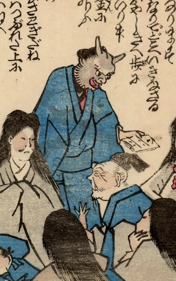

← 图鉴索引

町人姿の鬼。灰色の肌で、頭には2本の鋭い角が生えている。
出典：親書誌：U426_nichibunken_0216：二日はなし；フツカバナシ／日付：2010／資源識別子：U426_nichibunken_0216_0002_0000
Copyright (c)2010- International Research Center for Japanese Studies, Kyoto, Japan. All rights reserved.